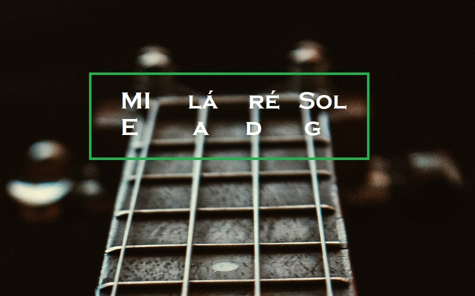

- Home
- >
- Conteúdo
- >
- Afinação
Afinação
Aprender a afinar seu instrumento é primordial, se seu desejo é fazer música, não tem para onde fugir, cultivar o hábito da afinação é o melhor caminho.
Se você apenas possui o desejo de tocar e não tem noção alguma de tom ou escalas, vamos começas do zero, lembre-se, um passo de cada vez.
Vamos experimentar as referências
Para afinar nossos instrumentos de corda vamos utilizar o MI - Si- Sol - Ré - lá, isso no caso do violão.
Para afinar o baixo utilize o Sol - Ré - Lá - Mi
Você tem a opção de utilizar o afinador, existem varios aplicativos.
Uma opção super produtiva é treinar o ouvido, no futuro isso será fudamental.
Violão
Baixo
←Voltar